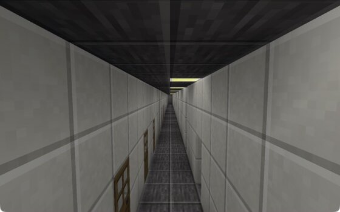
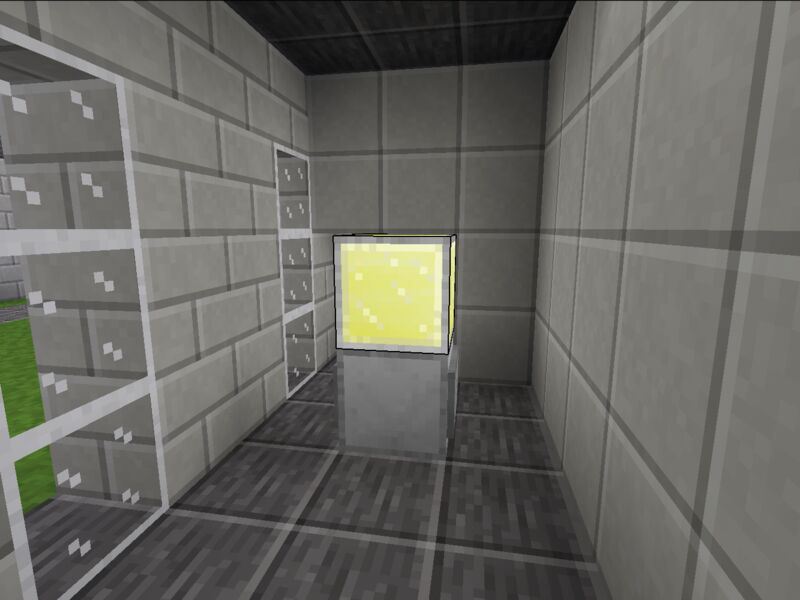
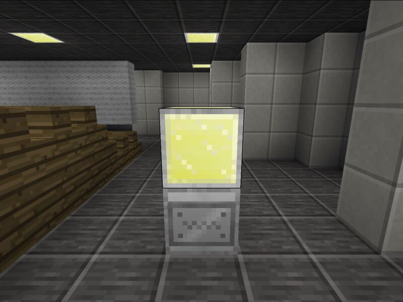
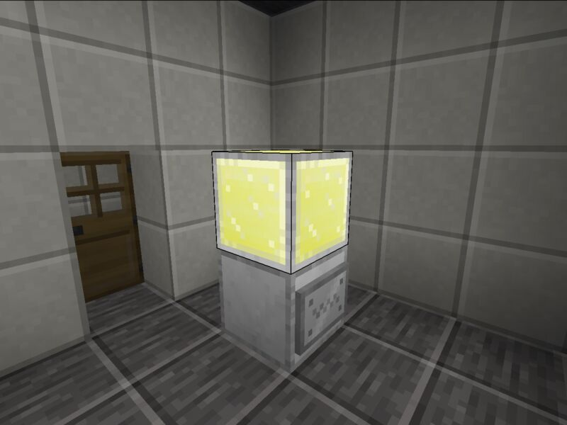
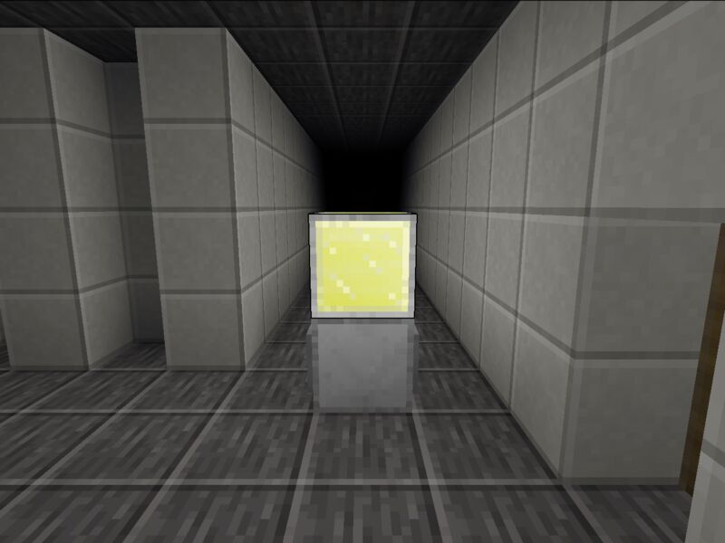

Spencer Engineering Building (SEB)
The original engineering building, home of the Dean's office and two departments, with additions from 1969 to 2016.


Spencer Engineering Building
Built 1958-59 and opened Oct 30, 1959 (architect Ronald Murphy). Three storeys, Collegiate Gothic. Home of the Dean's office and of Mechanical and Materials, and Civil and Environmental Engineering.
Mechanical and Materials Engineering
Lecture room SEB 1059
SEB 1059 seats 222 in theatre-style fixed tab-arm seating. SEB 1200 nearby seats 200.
Undergraduate programs
A building that kept growing
Western Facilities Management lists the 1957 original, a 1969 south addition, a 2002 classroom addition, the 2008 Claudette MacKay-Lassonde Pavilion and the 2016 ACEB addition.
Civil and Environmental Engineering
Leonardo da Vinci Room (lower level)
One floor down is the da Vinci Room, a cafeteria and lounge decorated with da Vinci murals. DaVinci's Cafe was added in 2019. The lower level is not modelled.
Future students